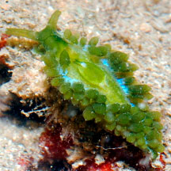
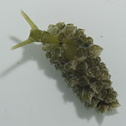
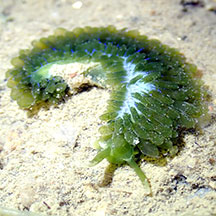
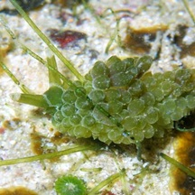
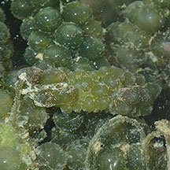

|
|
| sea slugs text index | photo index |
| Phylum Mollusca > Class Gastropoda > sea slugs > Order Sacoglossa > Family Elysiidae |
| Emerald
slug Stiliger smaragdinus Family Limapontidae updated Oct 2016 Where seen? This tiny slug is sometimes seen on Caulerpa green seaweed (Caulerpa sp.). Features: A tiny well camouflaged slug (2-4cm long). Long, soft slender body covered with spherical bumps (cerata) that resemble the seaweed's colour and shape. The cerata contain its digestive system and are thus often the same colour as the seaweed it feeds on. There are many iridescent blue dots at the base of the cerata. It has a pair of rhinophores that is green with whitish tips. |
 Chek Jawa, Jul 13 |
 Lazaraus, Aug 12 |
| Emerald slugs on Singapore shores |
On wildsingapore
flickr
|
| Other sightings on Singapore shores |
 Changi, Aug 19 Photo shared by Jianlin Liu on facebook. |
 Sentosa, Nov 10 Photo shared by Loh Kok Sheng on his blog. |
 Terumbu Hantu, Jul 19 Photo shared by Toh Chay Hoon on facebook. |
Links
References
|